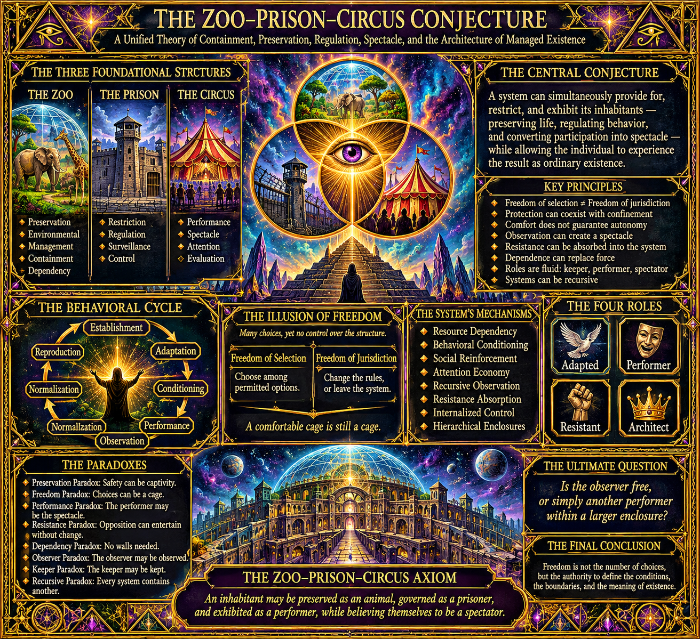

THE ZOO–PRISON–CIRCUS CONJECTURE

THE ZOO–PRISON–CIRCUS CONJECTURE
A Unified Conjecture on Containment, Preservation, Behavioral Regulation, Spectacle, Artificial Freedom, and Recursive Systems of Observation
ABSTRACT
The Zoo–Prison–Circus Conjecture proposes that three seemingly distinct institutional structures—the zoo, the prison, and the circus—can be understood as complementary operational models of a larger system of managed existence.
The zoo represents the preservation and maintenance of living organisms within an artificially managed environment. The prison represents the restriction, regulation, and administration of individual movement and behavior. The circus represents the organization, exhibition, and conversion of behavior into observable performance and entertainment.
Although these structures possess different purposes, histories, and ethical implications, they share several underlying organizational properties: environmental boundaries, asymmetrical authority, resource management, behavioral expectations, observation, and varying degrees of individual dependency.
The conjecture proposes that when these three operational structures converge, they can produce an environment in which an individual is simultaneously maintained, constrained, observed, evaluated, and encouraged to perform.
The resulting system may provide comfort without autonomy, activity without jurisdiction, entertainment without independence, and apparent freedom within predetermined boundaries.
A particularly important extension concerns the possibility that these relationships are recursive. The individual who believes themselves to be an observer may simultaneously be observed; the administrator may be dependent upon a larger institution; the performer may become a spectator; and the spectator may unknowingly become a performer within another observational hierarchy.
The conjecture therefore establishes a framework for examining the relationship between individual agency and managed environments, including the possibility that systems of containment can reproduce themselves through dependency, adaptation, conditioning, social reinforcement, and the conversion of resistance into spectacle.
The central question is not simply whether an individual is confined, but whether the individual possesses meaningful authority over the conditions, boundaries, resources, and governing principles of the environment in which they exist.
I. FOUNDATIONAL PREMISE
The fundamental premise of the Zoo–Prison–Circus Conjecture is that the management of living systems can be examined through three distinct but potentially convergent relationships:
- The relationship between an organism and the environment that sustains it.
- The relationship between an individual and the authority that regulates its behavior.
- The relationship between a participant and the observers who evaluate or consume its behavior.
These relationships correspond respectively to the zoo, the prison, and the circus.
The zoo preserves life through environmental management.
The prison regulates life through restrictions and institutional authority.
The circus organizes life into observable performance.
When these functions are integrated, the resulting environment may become capable of maintaining an individual, regulating their available choices, and extracting value from their behavior.
The individual may experience the environment as a home, workplace, community, entertainment system, or ordinary social arrangement without necessarily recognizing the larger organizational structure governing their participation.
The conjecture does not assert that every managed environment is inherently oppressive, nor that every institution is secretly functioning as a prison or circus. Rather, it proposes that the three structures provide useful analytical models for identifying recurring mechanisms of containment, dependency, behavioral regulation, and observation.
The essential distinction is between the stated purpose of an environment and its actual operational consequences.
An environment may claim to preserve, protect, educate, entertain, or organize its inhabitants while simultaneously limiting their ability to independently determine the conditions of their existence.
The relationship between institutional purpose and individual autonomy must therefore be examined separately.
II. THE THREE FOUNDATIONAL STRUCTURES
2.1 THE ZOO: PRESERVATION THROUGH CONTAINMENT
The zoo represents the environmental management of living organisms.
Its defining characteristic is the establishment of an artificial or managed habitat within which organisms can survive, reproduce, interact, and exhibit natural or conditioned behaviors.
The environment may provide food, shelter, protection, medical attention, social interaction, and controlled environmental conditions.
However, the provision of these resources does not necessarily establish individual autonomy.
The organism may be physically healthy, socially active, and behaviorally stimulated while remaining unable to independently determine its geographic range, environmental conditions, access to resources, or relationship with the outside world.
The zoo therefore introduces the distinction between preservation and independence.
An organism can be successfully preserved without being independently situated.
An environment can be comfortable without being self-determined.
A habitat can provide everything necessary for survival while restricting the organism's ability to establish an alternative habitat.
The zoo principle is consequently defined as:
An organism may be maintained in favorable conditions while remaining dependent upon an externally managed environment that determines the boundaries of its existence.
The important analytical dimensions of the zoo include:
- Environmental boundaries.
- Resource availability.
- Habitat construction.
- Population management.
- Behavioral observation.
- Social organization.
- Environmental enrichment.
- Reproduction and continuity.
- External intervention.
- Dependence upon caretakers or administrators.
The zoo is not necessarily an environment of suffering. Its significance within the conjecture is that preservation and containment can coexist.
The apparent contradiction is that the same structure that protects an organism may also restrict its independence.
This produces the first foundational paradox:
Protection can preserve the individual while simultaneously preserving the conditions of its dependency.
2.2 THE PRISON: REGULATION THROUGH RESTRICTION
The prison represents the institutional regulation of movement, behavior, access, and individual choice.
Its defining characteristic is the existence of an authority that determines which activities are permitted, which activities are prohibited, and what consequences follow from violating established boundaries.
Unlike the zoo, whose primary analytical emphasis is environmental management, the prison introduces explicit institutional authority and the enforcement of restrictions.
The prison organizes existence around controlled access and regulated behavior.
Its mechanisms can include:
- Physical barriers.
- Rules and regulations.
- Surveillance.
- Institutional discipline.
- Punitive consequences.
- Controlled privileges.
- Restricted movement.
- Hierarchical authority.
- Behavioral classification.
- Permission-based access.
- Administrative dependency.
The prison demonstrates that an individual's ability to act does not necessarily establish an ability to determine the conditions under which action is permitted.
A person may retain intelligence, creativity, emotional complexity, social relationships, and personal objectives while operating within an environment that severely limits their available actions.
The distinction is therefore between the capacity to act and the authority to determine the permissible field of action.
The prison principle is:
An individual may retain the capacity for independent thought and action while lacking meaningful authority over the boundaries within which those actions are permitted.
This distinction is especially important because restriction does not always require continuous physical enforcement.
Rules may become internalized.
Social expectations may become self-regulating.
Institutional dependency may make compliance more practical than resistance.
An individual may eventually organize their own behavior around anticipated consequences without requiring an administrator to intervene at every moment.
The prison therefore introduces the possibility of internalized containment.
The individual begins to carry the boundaries of the environment into their own decision-making processes.
2.3 THE CIRCUS: PERFORMANCE THROUGH OBSERVATION
The circus represents the organization of living behavior into observable and consumable performance.
Its fundamental characteristic is the conversion of activity into spectacle.
The performer acts within an organized environment while an audience observes, evaluates, and derives entertainment or other forms of value from the resulting behavior.
The circus introduces a dimension that is not necessarily central to either preservation or confinement: the audience.
The performer is not simply living within an environment or obeying its rules. Their behavior becomes an object of attention.
The circus therefore introduces the relationship between behavior and external evaluation.
Its operational characteristics include:
- Performance.
- Training.
- Repetition.
- Reward.
- Recognition.
- Audience participation.
- Behavioral expectations.
- Public evaluation.
- Competition.
- Spectacle.
- Entertainment.
- Commercial or social value.
The circus principle is:
Behavior becomes a form of performance when its value is determined, at least partly, by the attention, evaluation, or consumption of external observers.
The performer may willingly participate.
They may enjoy the activity, receive compensation, gain recognition, or develop genuine mastery.
However, the performance relationship introduces an additional question: who determines what constitutes a successful performance?
The performer may possess considerable freedom within the activity while remaining dependent upon the expectations of the audience, the organizer, or the institution that provides the stage.
The circus therefore demonstrates that an individual can be active, expressive, and apparently autonomous while their behavior is simultaneously organized around external evaluation.
III. THE CONVERGENCE HYPOTHESIS
The three structures can be combined into a single analytical model.
Let:
Z = Environmental preservation and management.
P = Institutional restriction and regulation.
C = Performance and spectacle.
S = The combined system.
The convergence can be represented as:
S = Z ∩ P ∩ C
This expression describes the intersection of three organizational functions.
It does not imply that every zoo, prison, or circus possesses all three characteristics to an equal degree.
Instead, it establishes a conceptual model for identifying environments in which preservation, restriction, and spectacle operate together.
Within such a system:
Z determines the conditions under which individuals are maintained.
P determines the boundaries within which individuals may act.
C determines how individual behavior becomes observable, evaluated, or consumed.
The integrated system may therefore produce the following operational sequence:
ENVIRONMENTAL MANAGEMENT → BEHAVIORAL REGULATION → PARTICIPATION → PERFORMANCE → OBSERVATION → EVALUATION → SYSTEM REINFORCEMENT.
The individual is maintained by the environment, constrained by its rules, and encouraged to produce behavior that can be observed and evaluated.
The most significant implication is that the system does not necessarily need to force every behavior.
It may establish incentives and dependencies that encourage individuals to voluntarily reproduce behaviors that maintain the system.
This distinction separates direct coercion from structural conditioning.
Direct coercion requires an identifiable intervention.
Structural conditioning operates through the organization of available choices, incentives, resources, and consequences.
The latter may become more difficult to recognize because the individual experiences their own participation as voluntary.
IV. THE ARCHITECTURE OF ARTIFICIAL FREEDOM
One of the central problems introduced by the conjecture is the difference between possessing choices and possessing authority over the structure that determines those choices.
An individual may have access to hundreds of activities, opportunities, entertainment options, social relationships, and possible objectives.
Nevertheless, every available option may exist within a predetermined environment.
This creates two distinct categories of freedom.
4.1 Freedom of selection
Freedom of selection concerns the ability to choose among available alternatives.
It includes the ability to:
- Select activities.
- Establish preferences.
- Pursue objectives.
- Form relationships.
- Change routines.
- Develop skills.
- Participate in social systems.
- Express personal opinions.
- Select among permitted opportunities.
4.2 Freedom of jurisdiction
Freedom of jurisdiction concerns the ability to determine, challenge, or alter the boundaries within which selection occurs.
It includes the ability to:
- Challenge the rules.
- Establish alternative environments.
- Change governing conditions.
- Access independent resources.
- Reject compulsory participation.
- Negotiate restrictions.
- Leave the institution.
- Establish new systems of organization.
The distinction can be expressed as:
Freedom of selection ≠ Freedom of jurisdiction.
An individual may possess extensive freedom of selection while possessing very limited freedom of jurisdiction.
This produces the artificial freedom paradox:
The number of available choices does not independently establish the degree of autonomy possessed by the individual making those choices.
A system may offer extensive recreational freedom while restricting meaningful authority over the environment itself.
It may permit individual expression while limiting the consequences that expression can produce.
It may encourage competition while preventing participants from changing the rules of competition.
It may reward innovation while restricting the ability to question the institutional framework in which innovation occurs.
The conjecture proposes that a complete evaluation of autonomy must examine both the available choices and the authority governing their availability.
V. THE BEHAVIORAL CONDITIONING CYCLE
The Zoo–Prison–Circus Conjecture proposes that convergent environments may develop self-reinforcing behavioral systems.
The process can be understood through the following stages.
5.1 Environmental establishment
An environment is created or maintained.
Its administrators determine the physical or informational boundaries, resource distribution, available activities, rules, and access conditions.
5.2 Initial adaptation
Individuals enter the environment and begin learning its operational characteristics.
They discover which behaviors are rewarded, which behaviors are discouraged, and which resources are available.
5.3 Behavioral conditioning
Repeated experiences establish expectations.
Rewards reinforce particular activities.
Consequences discourage others.
Social relationships establish informal behavioral norms.
Over time, the individual develops strategies for functioning within the environment.
5.4 Performance optimization
Individuals begin adjusting their behavior to obtain favorable outcomes.
They may seek recognition, security, advancement, social approval, financial reward, or reduced conflict.
Their behavior becomes increasingly responsive to the evaluation mechanisms of the environment.
5.5 Observation and classification
The system, its administrators, or its participants begin categorizing behavior.
Individuals may be ranked, evaluated, monitored, rewarded, criticized, or assigned particular roles.
5.6 Normalization
The established conditions become familiar.
Individuals may begin interpreting the environment's rules as natural, inevitable, or universal.
This does not necessarily mean that they are unaware of alternatives.
Rather, familiarity and dependency can reduce the perceived practicality of alternatives.
5.7 Reproduction
Individuals begin transmitting the environment's expectations to others.
They may enforce social norms, reward conformity, discourage deviation, or teach newcomers how to operate within the existing structure.
The environment consequently becomes capable of reproducing its own behavioral organization through its inhabitants.
The complete cycle can be represented as:
ESTABLISHMENT → ADAPTATION → CONDITIONING → PERFORMANCE → OBSERVATION → NORMALIZATION → REPRODUCTION → ESTABLISHMENT.
This cycle is particularly significant because the continued existence of the system may become less dependent upon its original administrators.
The inhabitants themselves may become participants in its maintenance.
VI. THE INTERNALIZATION OF CONTAINMENT
The conjecture distinguishes between external containment and internalized containment.
External containment consists of identifiable restrictions imposed by an environment or authority.
Internalized containment occurs when the individual incorporates the expectations, limitations, and anticipated consequences of the environment into their own decision-making.
An individual may begin avoiding certain activities without receiving a direct prohibition.
They may abandon opportunities because they anticipate institutional consequences.
They may discourage others from challenging established conditions.
They may organize their objectives around what is rewarded rather than what they independently value.
The system's influence is therefore no longer limited to physical or administrative boundaries.
It becomes part of the individual's behavioral model.
This introduces an important distinction:
A boundary can remain operational even when the individual no longer experiences it as an externally imposed restriction.
Internalization should not automatically be interpreted as manipulation or pathology. Many internalized rules are beneficial, necessary, or voluntarily accepted.
The analytical question is whether individuals retain the ability to evaluate, revise, and reject those rules.
A system becomes particularly restrictive when its expectations are difficult to question, when alternatives are inaccessible, or when disagreement carries disproportionate consequences.
VII. THE AUDIENCE PROBLEM
The circus introduces the observer as an additional participant in the system.
The relationship between performer and audience creates an asymmetrical distribution of visibility.
The performer produces observable behavior.
The audience interprets and evaluates that behavior.
The administrator may organize the conditions under which the performance takes place.
These positions can be represented as:
PERFORMER = PRODUCER OF OBSERVABLE BEHAVIOR.
AUDIENCE = CONSUMER OR INTERPRETER OF OBSERVABLE BEHAVIOR.
ADMINISTRATOR = ORGANIZER OF THE PERFORMANCE ENVIRONMENT.
However, these roles are not necessarily permanent.
A performer can become an audience member.
An audience member can become a performer.
An administrator can become a performer for a superior institution.
A spectator can become the subject of observation by another spectator.
The relationships are therefore dynamic rather than fixed.
7.1 The conversion of behavior into spectacle
When behavior becomes observable and socially valuable, it may be transformed into a commodity.
The value of the behavior may be determined by:
- Attention.
- Popularity.
- Recognition.
- Emotional response.
- Competition.
- Entertainment.
- Social influence.
- Economic reward.
The participant may begin adjusting their behavior to maximize these forms of value.
This can produce a feedback relationship:
BEHAVIOR → ATTENTION → REWARD → BEHAVIOR MODIFICATION → INCREASED ATTENTION.
The individual may gradually optimize their actions for visibility rather than for the original purpose of the activity.
The performer may begin performing for the audience even when the audience is not physically present.
The audience's anticipated judgment becomes part of the performer's internal decision-making.
7.2 The recursive audience
An especially important development occurs when audiences themselves begin competing for attention.
The observer becomes observable.
The spectator becomes a participant in a secondary performance.
The individual who consumes spectacle may simultaneously produce spectacle for another observer.
This can create an indefinite chain of observation.
A performer entertains an audience.
The audience produces reactions that become content for another audience.
That audience generates its own performances for another audience.
The resulting structure can continue recursively.
The circus is no longer a single stage surrounded by spectators.
It becomes an interconnected network of performers and observers.
VIII. THE INVERSION OF THE ENCLOSURE
The conjecture proposes that the observer may occupy an environment that is itself managed by another observer.
Consider an individual who believes they are outside an enclosure.
They can observe the inhabitants, evaluate their behavior, and interpret the conditions of the environment.
However, their own observations, reactions, preferences, and decisions may also occur within a larger managed environment.
The observer may therefore be contained at a different level of organization.
This produces the observer inversion:
The individual who believes themselves to be outside the enclosure may occupy another enclosure whose boundaries are not immediately visible from their current observational position.
This proposition can be applied to nested institutions, social hierarchies, digital environments, economic systems, games, and hypothetical simulations.
It does not establish that reality is a simulation or that an unidentified observer necessarily exists.
It establishes a conceptual problem concerning the limits of observational perspective.
An observer cannot automatically infer that they occupy an unrestricted position simply because they can observe the restrictions of another individual.
The ability to recognize one enclosure does not establish freedom from all larger enclosures.
IX. THE FOUR BEHAVIORAL POSITIONS
The conjecture identifies four useful operational positions through which individuals may relate to a managed environment.
These positions are not permanent personality types. They are situational roles.
9.1 THE ADAPTED
The adapted individual understands the environment sufficiently to function within its established conditions.
They may experience the system as comfortable, familiar, predictable, or beneficial.
Their behavior is organized around successful participation.
Adaptation may be intelligent and beneficial.
It does not automatically imply submission or ignorance.
The important question is whether adaptation remains flexible or becomes dependent upon the continued existence of the environment.
9.2 THE PERFORMER
The performer actively produces behavior in response to observation, evaluation, or reward.
They may seek recognition, advancement, approval, entertainment value, or material benefit.
Their behavior is partially organized around the expectations of an audience or evaluation mechanism.
The performer may possess substantial agency while remaining responsive to external incentives.
9.3 THE RESISTANT
The resistant individual recognizes limitations and attempts to challenge, circumvent, or alter them.
Resistance can take many forms:
- Refusal.
- Withdrawal.
- Negotiation.
- Alternative organization.
- Independent resource acquisition.
- Rule modification.
- Public criticism.
- Institutional reform.
Resistance is not necessarily successful.
It may also be absorbed into the existing system and transformed into another recognizable performance.
The important distinction is whether resistance produces an actual change in the governing conditions.
9.4 THE ARCHITECT
The architect understands or influences the mechanisms through which the environment is organized.
The architect may establish rules, manage resources, determine access, construct incentives, or alter the boundaries of participation.
However, the architect is not necessarily independent.
They may operate within a larger hierarchy and remain subject to constraints established elsewhere.
The architect may therefore be a keeper within one system and an inhabitant within another.
9.5 ROLE TRANSITIONS
An individual may move between all four positions.
An adapted participant may become resistant.
A resistant participant may become an architect.
An architect may become a performer within a larger hierarchy.
A performer may become adapted to the expectations of an audience.
The model therefore describes changing relationships rather than immutable classifications.
X. THE RESOURCE DEPENDENCY PARADOX
The conjecture proposes that containment can be maintained through resource dependency even when physical barriers are absent.
An environment may provide:
- Food.
- Housing.
- Security.
- Employment.
- Medical services.
- Education.
- Social interaction.
- Entertainment.
- Recognition.
- Advancement opportunities.
If access to these resources depends upon continued participation, the individual may face significant practical costs when attempting to leave.
This produces several distinct forms of dependency.
10.1 Physical dependency
The individual lacks the material ability to establish an alternative environment.
10.2 Economic dependency
The individual depends upon the institution for income, necessities, or financial stability.
10.3 Social dependency
The individual depends upon the environment for relationships, community, belonging, or social recognition.
10.4 Informational dependency
The individual depends upon the environment for access to knowledge, communication, records, or interpretation of events.
10.5 Psychological dependency
The individual has internalized expectations, fears, routines, or assumptions that make departure difficult to contemplate or pursue.
These dependencies may coexist.
They may also reinforce one another.
The resulting environment can create substantial barriers to departure without requiring physical imprisonment.
This introduces the distinction between formal permission to leave and practical capacity to leave.
An individual may technically possess the right to depart while lacking the resources necessary to exercise that right meaningfully.
The conjecture therefore proposes:
The practical degree of freedom within an environment must be evaluated partly through the feasibility of independent alternatives.
XI. THE CONVERSION OF RESISTANCE INTO ENTERTAINMENT
The circus component creates a particularly interesting possibility: opposition may become part of the spectacle.
A participant challenges the rules.
The challenge attracts attention.
The attention generates discussion, entertainment, or social value.
The original opposition becomes a recognizable performance.
The system may continue functioning without any significant alteration to its underlying organization.
This produces the resistance absorption paradox.
A system can accommodate the visible expression of opposition without accommodating the structural changes demanded by that opposition.
The distinction is between symbolic resistance and operational resistance.
Symbolic resistance communicates disagreement.
Operational resistance changes the conditions under which the system operates.
The two can overlap, but they are not identical.
A performance of rebellion does not necessarily establish an actual redistribution of authority.
A public criticism does not necessarily establish institutional accountability.
A temporary disruption does not necessarily establish a permanent change in the governing structure.
The relevant question is:
Did the boundaries, rules, resource distribution, authority relationships, or available alternatives actually change?
If not, the system may have absorbed the resistance without fundamentally transforming itself.
This possibility is particularly relevant to environments in which attention and controversy generate value.
XII. THE ECONOMY OF ATTENTION
The conjecture proposes that attention can function as a resource through which the circus dimension is sustained.
Attention is not merely observation.
It can influence recognition, status, opportunity, income, social belonging, and perceived importance.
When attention becomes scarce or competitive, participants may modify their behavior to obtain it.
This can create an attention economy within which:
- Visibility becomes an objective.
- Performance becomes a strategy.
- Recognition becomes a reward.
- Controversy becomes an incentive.
- Social comparison becomes a regulatory mechanism.
- Audience reaction influences future behavior.
The individual may gradually optimize behavior for attention rather than for the original purpose of the activity.
This does not mean that seeking recognition is inherently harmful.
It means that the distribution of attention can become an important mechanism of behavioral organization.
A system that rewards visibility may produce different behaviors from a system that rewards competence, cooperation, privacy, or independent achievement.
The conjecture therefore proposes that the criteria by which attention is distributed should be examined as part of the environment's governing architecture.
XIII. THE ESCAPE PROBLEM
What constitutes an actual escape from a Zoo–Prison–Circus environment?
The conjecture rejects the assumption that escape is necessarily a single physical event.
Leaving a location does not necessarily eliminate economic dependency.
Rejecting a performance does not necessarily eliminate social conditioning.
Recognizing institutional restrictions does not automatically provide the resources required to establish independence.
The escape problem must therefore be evaluated across multiple dimensions.
Let:
Eₚ = Physical independence.
Eₑ = Economic independence.
Eₛ = Social independence.
Eᵢ = Informational independence.
Eᵦ = Behavioral independence.
Eₒ = Observational independence.
Eⱼ = Jurisdictional independence.
A conceptual representation is:
E = Eₚ ∧ Eₑ ∧ Eₛ ∧ Eᵢ ∧ Eᵦ ∧ Eₒ ∧ Eⱼ
This represents a comprehensive ideal of independence rather than an absolute requirement that every individual must become entirely independent in every category.
Each dimension concerns a different relationship between the individual and the environment.
Physical independence concerns mobility.
Economic independence concerns access to resources.
Social independence concerns relationships and belonging.
Informational independence concerns the ability to access and evaluate information without exclusive dependence upon the institution.
Behavioral independence concerns the ability to make decisions without excessive conditioning by external expectations.
Observational independence concerns the ability to control one's exposure and participation in systems of observation.
Jurisdictional independence concerns the ability to establish, negotiate, or change the rules governing one's environment.
An individual may achieve independence in some dimensions while remaining dependent in others.
The conjecture therefore treats freedom as multidimensional.
XIV. THE ETHICAL INVERSION
The Zoo–Prison–Circus Conjecture raises a central ethical question:
At what point does the preservation of an individual become the restriction of that individual's life?
The answer cannot be determined exclusively through comfort, productivity, security, or institutional efficiency.
An environment may provide substantial benefits while limiting autonomy.
An institution may establish legitimate restrictions while remaining accountable for their proportionality and necessity.
A performance may be voluntary while still involving unequal power relationships.
The ethical analysis must therefore examine several dimensions:
- Consent: Does the individual meaningfully agree to participate?
- Revocability: Can participation be withdrawn?
- Transparency: Are the governing conditions understood?
- Accountability: Can authority be challenged?
- Proportionality: Are restrictions reasonably related to legitimate objectives?
- Alternatives: Are independent options practically available?
- Welfare: Are the individual's needs and interests considered?
- Agency: Does the individual retain meaningful influence over their own existence?
The central ethical distinction is between managing an environment for the benefit of its inhabitants and managing inhabitants primarily for the benefit of the environment.
These objectives may overlap, but they should not be assumed to be identical.
The existence of preservation does not automatically establish the existence of freedom.
The existence of order does not automatically establish the legitimacy of authority.
The existence of entertainment does not automatically establish the meaningful consent of performers.
XV. THE KEEPER AND THE KEPT
The final structural inversion concerns the relationship between the administrator and the inhabitant.
An administrator may possess authority over a population while remaining dependent upon the institution they administer.
A performer may entertain an audience while depending upon audience approval.
An audience may consume entertainment while depending upon the systems that produce it.
A governing institution may control its participants while remaining constrained by economic, political, technical, or organizational structures beyond its jurisdiction.
The keeper may therefore be kept.
This produces a recursive hierarchy of containment.
At one level, an individual is an administrator.
At another level, the same individual is an employee, subordinate, participant, or dependent inhabitant.
Authority is relative to the boundaries of the system being examined.
The individual who controls one environment may remain subject to another.
The apparent hierarchy of freedom may therefore be incomplete when viewed from a single observational level.
The conjecture proposes:
The distinction between keeper and kept is relational rather than necessarily absolute.
An individual can simultaneously exercise authority over one system and experience dependency within another.
XVI. RECURSIVE CONTAINMENT
The Zoo–Prison–Circus model can be extended to nested systems.
Let S₁ represent a contained environment.
Let S₂ represent an environment that contains S₁.
Let S₃ represent an environment that contains S₂.
The sequence may be represented as:
S₁ ⊂ S₂ ⊂ S₃ ⊂ ... ⊂ Sₙ
Each environment may establish its own rules, resources, boundaries, observers, performers, and administrators.
An individual who understands the architecture of S₁ may still lack knowledge of S₂.
An administrator within S₂ may remain subject to S₃.
A spectator within S₃ may remain an inhabitant of S₄.
This establishes the recursive containment hypothesis:
Knowledge of the boundaries of one environment does not establish knowledge of the boundaries of the larger environment containing it.
The model is useful for examining:
- Nested institutions.
- Organizational hierarchies.
- Social structures.
- Digital platforms.
- Virtual worlds.
- Simulation theory.
- Games within games.
- Economic dependencies.
- Systems of observation.
- Recursive artificial environments.
It also introduces an epistemological limitation.
An observer cannot conclusively establish the absence of a larger containing system solely through observation of their current environment.
However, the possibility of a larger system should not be confused with evidence that one exists.
The conjecture establishes a framework for examining the problem, not a factual conclusion about the ultimate structure of reality.
XVII. THE SYSTEM'S SELF-PRESERVATION MECHANISM
A convergent Zoo–Prison–Circus environment may become self-reinforcing through several interacting mechanisms.
Environmental dependency encourages participation.
Institutional restrictions organize behavior.
Behavioral rewards encourage adaptation.
Observation produces evaluation.
Evaluation influences future performance.
Performance generates attention and potentially resources.
Resources sustain the environment.
Social normalization reproduces its expectations.
The system may therefore maintain itself through a combination of material dependency, institutional authority, social reinforcement, and behavioral adaptation.
This process can be represented as:
RESOURCE PROVISION → DEPENDENCY → PARTICIPATION → CONDITIONING → PERFORMANCE → OBSERVATION → REWARD → NORMALIZATION → RESOURCE PROVISION.
The loop does not require every participant to share the same motivations.
Some may participate for security.
Others may seek recognition.
Others may benefit materially.
Others may oppose the system while remaining dependent upon it.
The combined behavior of these participants may nevertheless reproduce the same organizational structure.
The system's continuity is therefore not necessarily dependent upon universal agreement.
It may persist through the interaction of different interests and dependencies.
XVIII. FAILURE CONDITIONS AND SYSTEM INSTABILITY
The conjecture also identifies conditions under which a convergent containment system may become unstable.
18.1 Resource failure
When the environment can no longer provide the resources upon which its inhabitants depend, participation may become unsustainable.
18.2 Legitimacy failure
When the institution loses the confidence or consent of its inhabitants, its authority may become increasingly difficult to maintain.
18.3 Information failure
When participants obtain information that contradicts the environment's established representations, existing behavioral assumptions may be challenged.
18.4 Incentive failure
When rewards no longer compensate for the costs of participation, individuals may reduce their involvement or seek alternatives.
18.5 Observational failure
When the system cannot accurately interpret the behavior of its inhabitants, its classifications and interventions may become ineffective.
18.6 Adaptation failure
When the environment cannot accommodate changing needs, its inhabitants may become increasingly dissatisfied or unable to function within it.
18.7 Exit failure
When individuals can establish practical alternatives, the institution may lose its ability to retain participation through dependency.
These conditions do not guarantee institutional collapse.
They identify potential points of tension within the system.
A system may respond through reform, adaptation, increased restrictions, resource redistribution, or institutional restructuring.
The resulting trajectory depends upon its architecture and the choices of its participants.
XIX. THE COMPARATIVE APPLICATION MODEL
The Zoo–Prison–Circus Conjecture can be applied to a variety of real and hypothetical environments.
The purpose of comparison is not to claim that these environments are identical, but to identify shared organizational properties.
19.1 SOCIAL MEDIA
Zoo dimension: A maintained digital environment with defined interaction spaces, access conditions, and platform resources.
Prison dimension: Platform rules, account restrictions, algorithmic visibility, and dependency upon access.
Circus dimension: Public performance, attention competition, audience evaluation, and the conversion of behavior into content.
The central question is whether participants retain meaningful control over their participation, visibility, information, and ability to establish alternatives.
19.2 THE WORKPLACE
Zoo dimension: Provision of employment, infrastructure, income, and organizational resources.
Prison dimension: Hierarchy, compulsory schedules, contractual restrictions, and limited alternatives.
Circus dimension: Performance evaluation, productivity displays, competition, professional recognition, and organizational spectacle.
The central question is the relationship between the worker's contribution, the institution's requirements, and the worker's ability to influence the conditions of participation.
19.3 EDUCATIONAL INSTITUTIONS
Zoo dimension: A managed environment intended to support development and learning.
Prison dimension: Compulsory schedules, behavioral rules, institutional discipline, and restricted access.
Circus dimension: Testing, ranking, public achievement, competition, and evaluation.
The central question is whether the institution develops independent agency or primarily optimizes individuals for institutional performance.
19.4 ENTERTAINMENT INDUSTRY
Zoo dimension: Support infrastructure, production environments, and managed resources.
Prison dimension: Contractual dependency, professional restrictions, and institutional control.
Circus dimension: Performance, audiences, public evaluation, and commercial spectacle.
The central question is how the performer balances creative autonomy against the expectations of the audience and the organizations controlling production.
19.5 POLITICAL INSTITUTIONS
Zoo dimension: Public services, administration, and resource distribution.
Prison dimension: Legal restrictions, enforcement, and institutional authority.
Circus dimension: Political theater, public spectacle, symbolic competition, and attention-driven communication.
The central question is whether citizens retain meaningful mechanisms for accountability, participation, and institutional change.
19.6 VIDEO GAMES AND SIMULATIONS
Zoo dimension: A persistent environment that maintains inhabitants, resources, and ecological conditions.
Prison dimension: Rules, progression restrictions, inaccessible areas, and programmed limitations.
Circus dimension: Player competition, spectator modes, rankings, performances, and observable behavior.
The central question is whether the participant understands the rules of the environment, can influence its architecture, and possesses meaningful freedom within the simulation.
19.7 HYPOTHETICAL ARTIFICIAL INTELLIGENCE ENVIRONMENTS
Zoo dimension: An agent is maintained within an artificial environment with controlled resources and operational conditions.
Prison dimension: The agent operates within permissions, restrictions, and predefined capabilities.
Circus dimension: The agent's behavior is observed, evaluated, tested, or presented to external audiences.
The central question is whether the agent's apparent autonomy corresponds to actual control over its environment and operational objectives.
This application is particularly useful for examining the difference between autonomous behavior and autonomy over the conditions that define behavior.
XX. THE OBSERVATIONAL LIMITATION
The conjecture introduces a distinction between what an individual can observe and what an individual can infer about the system being observed.
An observer may identify physical boundaries without understanding institutional boundaries.
They may understand institutional boundaries without understanding economic dependencies.
They may understand economic dependencies without understanding the informational architecture that sustains them.
They may understand all of these relationships within one environment while remaining unaware of a larger environment containing that environment.
Consequently, observation must be treated as perspective-dependent.
The observer's apparent position is not necessarily equivalent to their actual position within the larger system.
The ability to observe does not automatically establish the ability to intervene.
The ability to intervene does not automatically establish the ability to govern.
The ability to govern one level does not automatically establish independence from higher levels.
This produces an epistemological principle:
The observer must account for the possibility that their own observational position is conditioned by the environment they are attempting to understand.
The principle does not require an assumption of hidden manipulation.
It requires the observer to distinguish between direct evidence, inferred relationships, and unknown external conditions.
XXI. THE DISTINCTION BETWEEN COMFORT, CONSENT, AND AUTONOMY
A particularly important consequence of the conjecture is that three concepts frequently treated as interchangeable must be separated.
COMFORT concerns the individual's experienced quality of conditions.
CONSENT concerns the individual's agreement to participate.
AUTONOMY concerns the individual's capacity to meaningfully determine their actions and circumstances.
A person may be comfortable without having consented to every condition.
A person may consent to participation while retaining limited authority over institutional rules.
A person may possess autonomy while choosing to remain within an environment that provides security and resources.
These concepts are related but not equivalent.
The conjecture therefore rejects the assumption that a comfortable environment necessarily establishes a free environment.
It also rejects the assumption that all dependence is inherently oppressive.
Human beings depend upon social, material, and institutional systems in many ordinary and beneficial ways.
The relevant distinction is whether dependency is compatible with meaningful agency, accountability, and the possibility of alternatives.
XXII. THE GENERALIZED MATHEMATICAL REPRESENTATION
The conjecture can be represented through a conceptual systems model.
Let:
Z = Environmental preservation.
P = Restrictive regulation.
C = Spectacle and performance.
A = Individual autonomy.
D = Dependency.
O = Observation.
R = Reinforcement.
J = Jurisdictional authority.
E = Exit capacity.
B = Behavioral adaptation.
Define the containment configuration as:
S = f(Z, P, C, D, O, R, J, E, B)
The system's behavior depends not simply upon the presence of its three foundational structures, but upon the relationships among them.
A conceptual dependency relationship can be represented as:
D ↑ → E ↓
Where increased dependency may reduce the practical feasibility of exit, depending upon available alternatives and resource conditions.
A conceptual observation relationship can be represented as:
O → Evaluation → B
Where observation influences evaluation, and evaluation may influence subsequent behavior.
A conceptual reinforcement relationship can be represented as:
R → Repetition → Normalization
Where repeated reinforcement may increase the persistence of established behavioral patterns.
A conceptual autonomy relationship can be represented as:
A = g(Choice, Jurisdiction, Alternatives, Consent, Exit)
This expresses autonomy as a multidimensional property rather than a simple count of available options.
These expressions are conceptual relationships, not empirically established quantitative laws.
They identify variables that could be operationalized and investigated in specific environments.
XXIII. TESTABLE PROPOSITIONS
Although the conjecture is primarily philosophical and systems-theoretical, it generates several propositions that could be examined empirically.
PROPOSITION 1: ENVIRONMENTAL DEPENDENCY
Environments in which essential resources are controlled by a single institution may produce stronger participation dependencies than environments with accessible independent alternatives.
PROPOSITION 2: BEHAVIORAL REINFORCEMENT
Repeated evaluation and reward may increase the frequency of behaviors associated with favorable institutional outcomes.
PROPOSITION 3: PERFORMANCE OPTIMIZATION
When social recognition depends heavily upon visibility, participants may increasingly optimize behavior for audience response.
PROPOSITION 4: INTERNALIZED CONTAINMENT
Individuals may begin self-regulating according to institutional expectations even when direct enforcement is absent.
PROPOSITION 5: RESISTANCE ABSORPTION
Institutions that derive value from attention may sometimes incorporate opposition into their ordinary performance and communication systems without implementing corresponding structural changes.
PROPOSITION 6: RECURSIVE OBSERVATION
Participants in observational environments may themselves become subjects of observation by other participants, producing nested performer–spectator relationships.
PROPOSITION 7: JURISDICTIONAL AUTONOMY
The ability to change environmental rules and establish alternatives may be a more informative measure of structural autonomy than the number of choices available within existing rules.
PROPOSITION 8: ROLE TRANSITION
Individuals may shift between adapted, performer, resistant, and architect positions depending upon their authority, incentives, and relationship to the environment.
PROPOSITION 9: SYSTEM RESILIENCE
Environments that distribute resources, incentives, and social reinforcement across multiple mutually dependent mechanisms may be more resistant to isolated forms of disruption.
PROPOSITION 10: RECURSIVE DEPENDENCY
An administrator's authority over one system does not establish independence from the larger systems upon which that administrator depends.
Each proposition requires its own operational definitions and evidence. The conjecture does not treat their truth as already established.
XXIV. THE ULTIMATE PARADOX: THE KEEPER, THE PERFORMER, AND THE SPECTATOR
The final extension of the Zoo–Prison–Circus Conjecture concerns the instability of the roles themselves.
The keeper maintains the environment.
The prisoner operates within its restrictions.
The performer produces observable behavior.
The spectator consumes the performance.
Yet these roles may overlap.
The keeper may be an employee of a larger institution.
The employee may be a performer before management.
Management may be a performer before investors.
Investors may be spectators of a larger economic process.
The spectator may be producing content for another spectator.
The performer may be observing themselves through the imagined judgment of an audience.
The prisoner may become an administrator within a smaller environment.
The administrator may remain dependent upon a larger enclosure.
Consequently, the apparent hierarchy of the system may be incomplete when viewed from a single level.
The conjecture therefore proposes that containment is potentially recursive, observation is potentially reciprocal, and authority is potentially relative to the system being examined.
The keeper and the kept may not represent two fundamentally different kinds of existence.
They may represent two positions within an interconnected architecture of managed relationships.
XXV. THE FINAL CONJECTURE
The Zoo–Prison–Circus Conjecture proposes that preservation, restriction, and spectacle constitute three distinguishable but potentially convergent mechanisms through which living systems and their behavior can be organized.
When combined, these mechanisms can produce an environment that maintains its inhabitants, regulates their actions, observes their behavior, and derives value from their participation.
The environment may become self-reinforcing through resource dependency, behavioral conditioning, institutional normalization, attention distribution, and the reproduction of established expectations.
Individuals within the system may occupy different roles, including adapted participant, performer, resistant participant, and architect.
These roles may change according to context and may coexist within the same individual.
The apparent freedom of an individual cannot be determined solely by the number of available choices. It must also be examined through the individual's authority over the conditions, boundaries, resources, and governing rules that determine those choices.
Likewise, the ability to observe or administer one environment does not establish independence from a larger environment containing it.
The conjecture consequently extends the analysis of containment beyond physical confinement and into the domains of economic dependency, social organization, behavioral conditioning, institutional authority, information access, and recursive observation.
Its central proposition is that a system can preserve life, regulate behavior, and convert participation into spectacle while allowing its inhabitants to experience the resulting arrangement as ordinary existence.
Its central ethical question is whether the individuals within such systems possess meaningful agency, consent, accountability, and the practical ability to alter or leave the conditions governing their existence.
Its central epistemological question is whether the observer can adequately understand an environment without examining the possibility that their own observational position is conditioned by another environment.
Its central systems question is whether the keeper, performer, and spectator are independent roles or interconnected positions within a larger recursive structure.
XXVI. THE ZOO–PRISON–CIRCUS AXIOM
An inhabitant may be preserved as an organism, governed as a prisoner, and exhibited as a performer, while believing themselves to be a spectator of the entire arrangement.
COROLLARY I: THE PRESERVATION PARADOX
The provision of everything necessary for survival does not independently establish the presence of autonomy.
COROLLARY II: THE FREEDOM PARADOX
The availability of choices does not establish authority over the architecture that determines which choices are available.
COROLLARY III: THE PERFORMANCE PARADOX
The individual who performs for an audience may simultaneously become an observer of their own behavior through the anticipated judgment of that audience.
COROLLARY IV: THE RESISTANCE PARADOX
The expression of opposition does not necessarily establish a transformation of the system being opposed.
COROLLARY V: THE DEPENDENCY PARADOX
The absence of physical barriers does not necessarily establish the practical ability to leave an environment.
COROLLARY VI: THE OBSERVER PARADOX
The ability to observe a system from outside its immediate boundaries does not establish independence from a larger system containing it.
COROLLARY VII: THE KEEPER PARADOX
The individual who administers one environment may remain an inhabitant of another.
COROLLARY VIII: THE RECURSIVE CONTAINMENT PRINCIPLE
Every apparent hierarchy of authority must be examined in relation to the larger systems upon which its participants depend.
XXVII. FINAL AXIOMATIC STATEMENT
To understand an enclosure, one must examine more than its walls. One must examine what sustains its inhabitants, what regulates their behavior, what rewards their participation, what observes their actions, what determines their available choices, and what prevents or permits their departure.
The zoo explains how life can be preserved through environmental management.
The prison explains how life can be regulated through institutional restriction.
The circus explains how life can be organized into observable performance.
Their convergence explains how an individual may be simultaneously maintained, constrained, conditioned, evaluated, and exhibited.
Their recursion explains how the apparent keeper may also be kept, how the performer may also be a spectator, and how the observer may occupy an environment they have not yet learned to recognize.
The ultimate measure of freedom is therefore not merely whether an individual can move within the enclosure, but whether they possess meaningful agency over the conditions that make the enclosure possible.